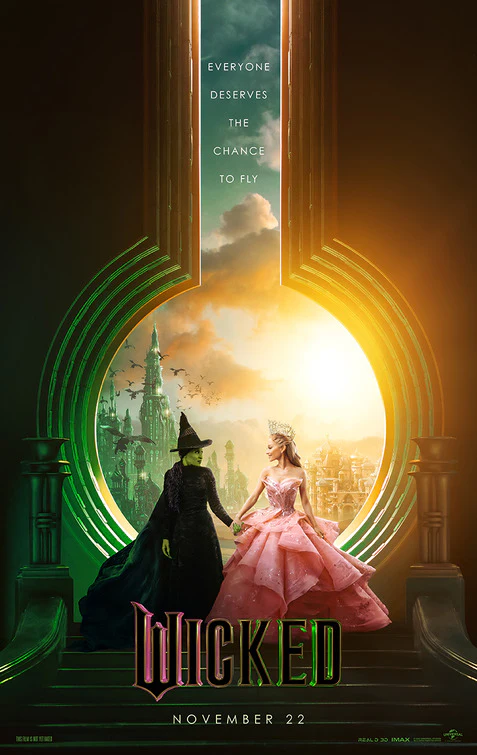
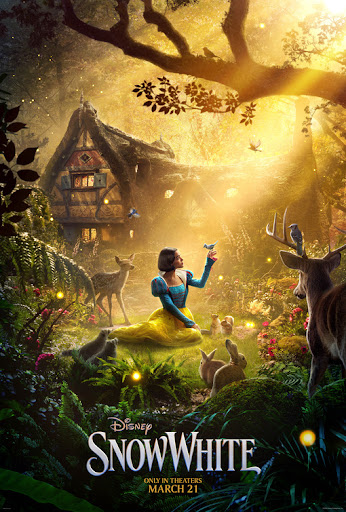
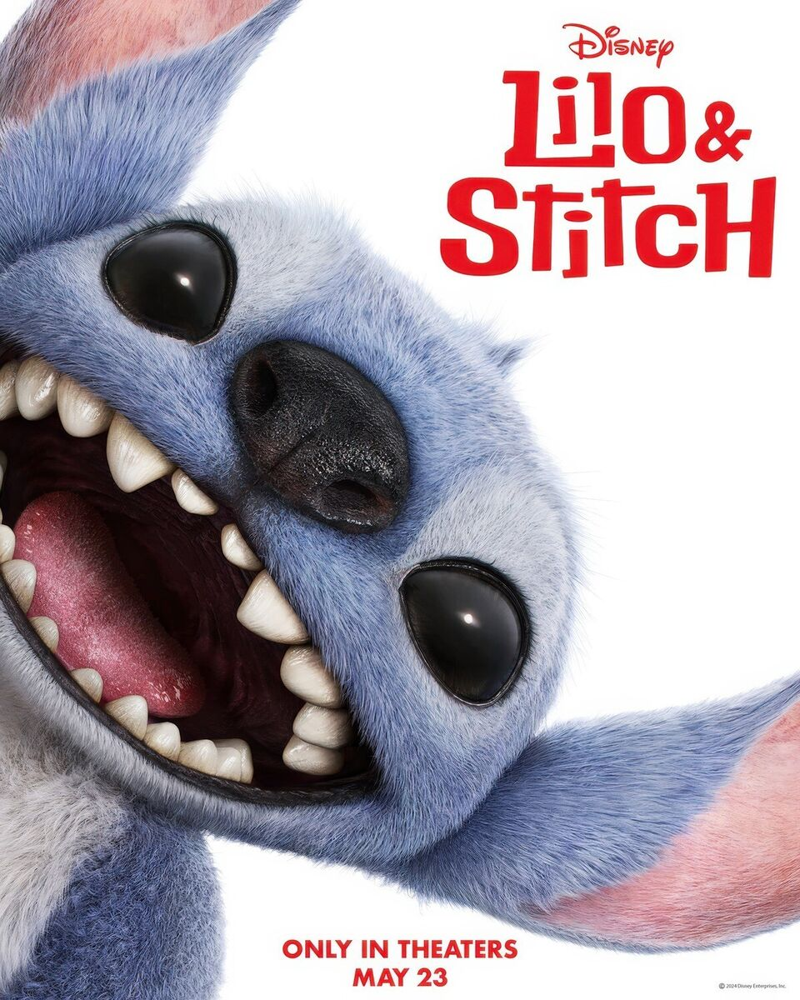

Popcorn & Opinions
About Me
Hello! My name is Sierra, and I have been a movie fanatic for pretty much my whole life. For as long as I can remember, I have loved watching movies. Rewatching them over and over to catch things I did not see the first time is also fun. Since I watch so many movies that it’s hard to keep track of them all, I decided to make this site to put all my movie reviews in one place. Feel free to look around and read my reviews at your leisure!
Current Favorite
Wicked
As a lifelong fan of Wicked (and an even bigger fan of Jonathan Bailey), I went into this movie with high hopes—and somehow, it still exceeded all of them. From the opening moments, Wicked pulls you into its dazzling, emerald-hued world, balancing Broadway magic with cinematic grandeur. First, let’s talk about Cynthia Erivo. Her Elphaba is breathtaking. Her voice? Chills with every note. Her ability to capture Elphaba’s personality in every subtle movement she makes and line she says is a joy to watch. And Ariana Grande as Glinda? Perfection. She brings charm, humor, and surprising depth to the role, nailing both the bubbly energy and the more serious moments. Their chemistry together is everything I could have hoped for. Having been a fan of Jonathan Bailey for many years, I was so happy to see him in a big role in a big blockbuster movie, and he nailed it. He brought such charm and depth to Fiyero, and I am excited to see his performance in part 2! The visuals are stunning, with a mix of sweeping fantasy landscapes and intricate set details that make Oz feel more alive than ever. And the music, to no one’s surprise, is incredible. Seeing iconic songs like Defying Gravity and No One Mourns the Wicked on the big screen made me emotional from start to finish. Whether you're a die-hard Wicked fan or new to the story, this adaptation is pure movie magic. It’s emotional, visually stunning, and full of heart. 🩷💚
Most Recent Review
Snow White (2025)
The 2025 Snow White is a movie that tries to breathe new life into the classic fairy tale, and while it has its moments, it ultimately lands somewhere in the middle—neither a disaster nor a masterpiece. Let’s start with the positives. At times, the set design is stunning, creating a rich and immersive fairy-tale world. Some of the musical numbers have a whimsical charm, and the supporting cast helps bring energy to the film. There are moments where the story adds depth to Snow White’s character, which is a nice touch. That being said, the movie struggles with its tone and pacing. It feels like it can’t decide whether it wants to be a classic Disney fairy tale or a modern, revisionist take. The costumes, unfortunately, don’t match the grandeur of the sets, often feeling out of place or underwhelming. The humor is hit-or-miss, and while the film tries to bring a fresh perspective, some of the changes feel forced rather than natural. Overall, Snow White (2025) is an okay watch. If you go in expecting a visually mixed but occasionally charming adaptation, you’ll find some things to enjoy. But if you're hoping for something truly magical or groundbreaking, it might leave you wanting more. 🍎
Next on Watchlist
Lilo & Stitch (2025)
When I first heard Disney was making a live action remake of the original Lilo & Stitch film from 2002, I was apprehensive. The original is one of my favorite movies from my childhood, and it still holds up incredibly well to this day. I have fond memories of watching it, and the following movies and TV show with my siblings. The first full trailer dropped a couple weeks ago, and I was pleasantly surprised that it actually looks like it will be a good movie. It does not look like a shot for shot remake of the original, which is good, and the new stuff that they showed in the trailer looks like it fits the tone of the original. I’m looking forward to seeing this movie and will update here with my review when I do! 🏖️